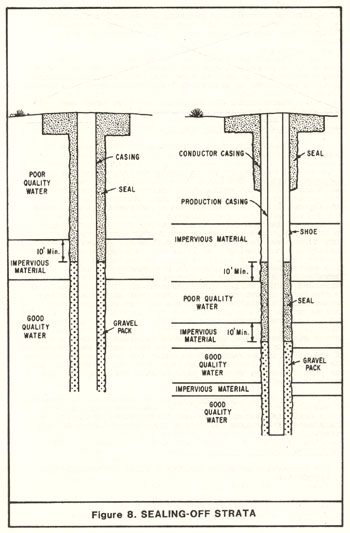

|
CHAPTER II. STANDARDS
Section 13. Sealing-off Strata.

In areas where a well penetrates more than one aquifer, and one or more of
the aquifers contains water that, if allowed to mix in sufficient quantity,
will result in a significant deterioration of the quality of water in the
other aquifer(s) or the quality of water produced, the strata producing such
poor-quality water shall be sealed off to prevent entrance of the water into
the well or its migration to other aquifer(s).
- Strata producing the undesirable quality water shall be sealed off by
placing impervious material opposite the strata and opposite the confining
formation(s). (See Figure 8.) The seal shall extend above and below the
strata no less than 10 feet even should the confining formation be
less than 10 feet in thickness. In the case of "bottom" waters,
the seal shall extend 10 feet in the upward direction. The sealing
material shall fill the annular space between the casing and the wall of the
drilled hole in the interval to be sealed, and the surrounding void spaces
which might absorb the sealing material. The sealing material shall be
placed from the bottom to the top of the interval to be sealed.
In areas where deep subsidence may occur (as, for example, portions of the
San Joaquin Valley) provision shall be made for maintaining the integrity of
the annular seal in the event of subsidence. Such preventive measures may
include the installation of a "sleeve" or "slip joint" in the casing, which
will allow vertical movement in the casing without its collapse.
- Sealing material shall consist of neat cement, cement grout, or bentonite
clay (see Section 9, Subsection D for description of the various materials).
- Sealing shall be accomplished by a method approved by the enforcing
agency.Note 17
|